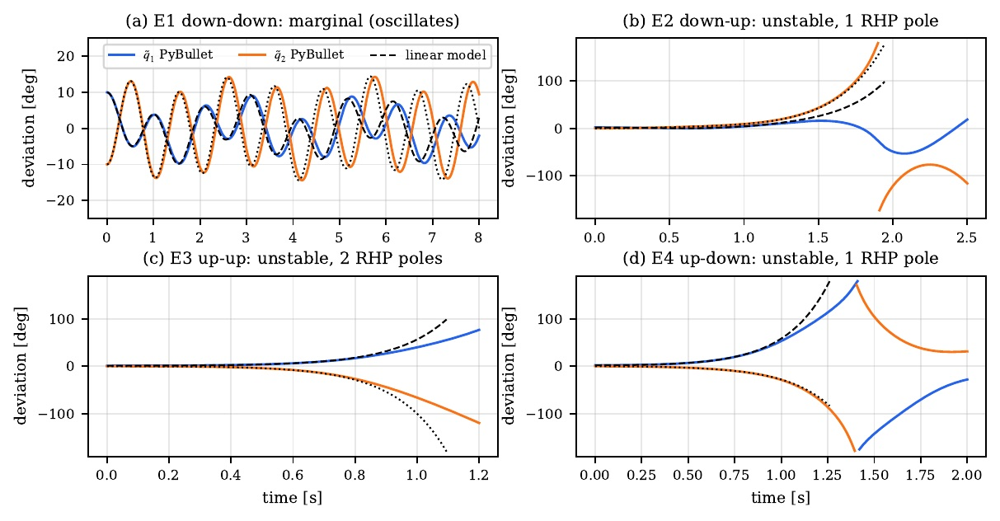
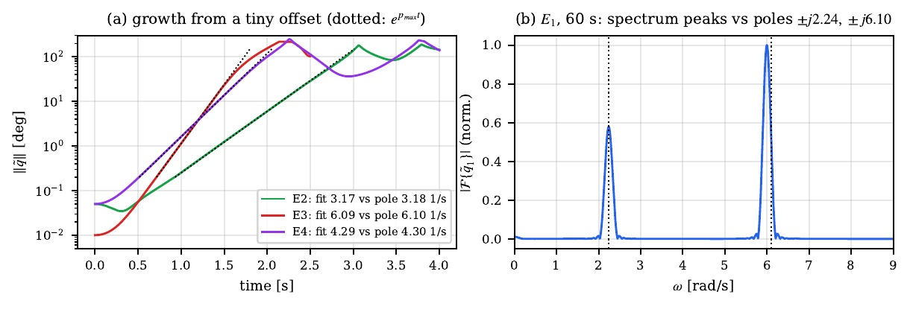
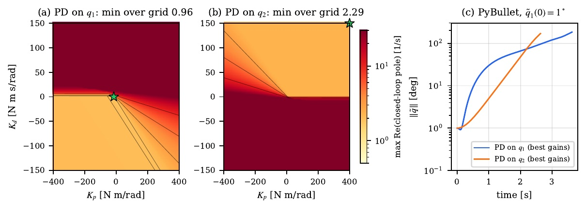
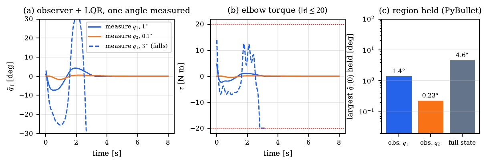
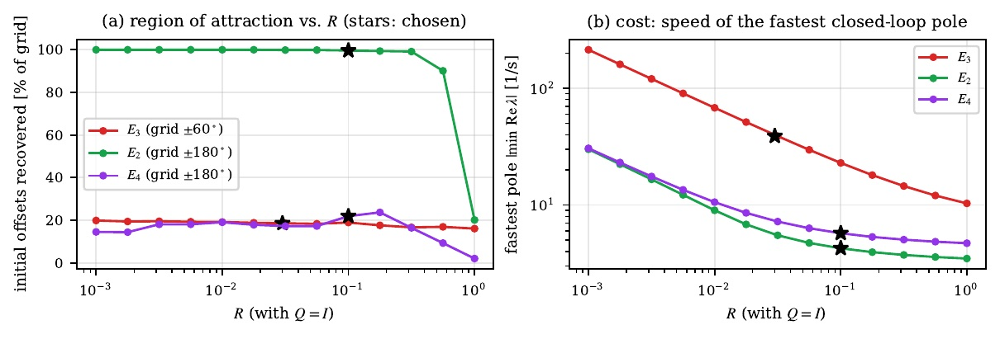
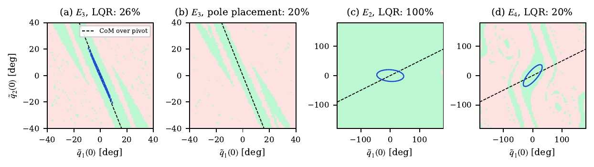
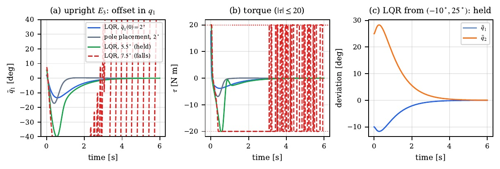
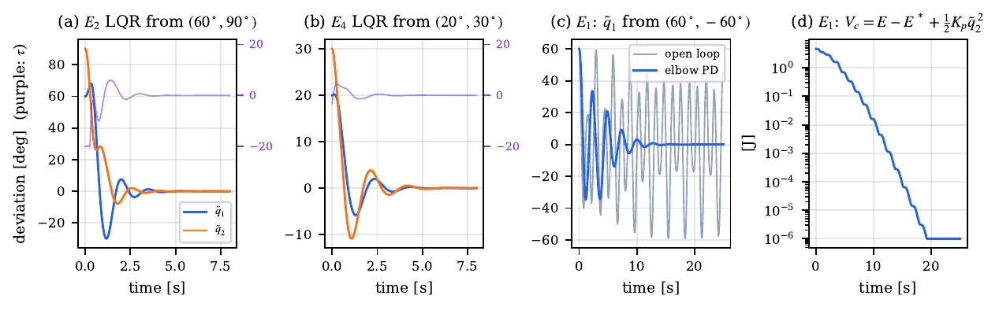

The Acrobot, explained
A robot gymnast with two arms, a motor in its elbow, and no motor in its shoulder. Can it balance upside down?
Think of a gymnast hanging from a high bar. Their hands can't grip-and-twist the bar; all they can do is swing their legs at the hips. The Acrobot is the robot version of that gymnast. This page walks through everything our team found out about it, in three steps: first we wrote down how it moves, then we checked which positions are steady, and finally we built a "balance helper" that keeps it standing on its head.
The rules of motion
Before a robot can be controlled, you need a rule that predicts what it does next. For a swinging arm that rule is a version of Newton's "force equals mass times acceleration", written for things that rotate.
- \(q=(q_1,q_2)\)the two angles: where the arm is.
- \(\dot q,\ \ddot q\)how fast the angles change (speed), and how fast that speed changes (spin-up).
- \(M(q)\)"heaviness" for turning. A stretched-out arm is harder to spin than a folded one, so it depends on the pose.
- \(C(q,\dot q)\,\dot q\)extra pushes that only appear while spinning, like being flung outward on a merry-go-round.
- \(\tau_g(q)\)gravity's twist, always trying to make the arm hang straight down.
- \(B\,\tau\)the motor's twist. The 0 on top of \(B\) says the shoulder gets nothing; only the elbow is pushed. The motor can push at most \(|\tau|\le 20\ \mathrm{N\,m}\).
"How hard it is to speed up" plus "the dizzy spinning pushes" equals "gravity pulling down" plus "the motor in the elbow". If you know where the arm is and how fast it's moving, this rule tells you exactly what it will do next. That is all a computer needs to simulate it.
| What | Link 1 (blue) | Link 2 (orange) |
|---|---|---|
| Mass | 1 kg | 1 kg |
| Length | 1 m | 2 m |
| Turning heaviness about its middle | 0.083 kg·m² | 0.33 kg·m² |
| Motor | none (free shoulder) | elbow, up to 20 N·m |
With these numbers the heaviness matrix becomes \(M(q)=\begin{bmatrix}2.663+2\cos q_2 & 1.33+\cos q_2\\ 1.33+\cos q_2 & 1.33\end{bmatrix}\). Its determinant \(1.7729-\cos^2 q_2\) is never zero, so the rule always gives an answer.
Four ways to stand still
An equilibrium is a pose where, with the motor off, nothing pushes the arm anywhere: it can stay put forever (if nobody touches it). That happens when gravity's twist is zero on both joints:
Each link must point straight up or straight down, so there are \(2\times2=4\) equilibria.
A pencil can stand still hanging from your fingers, or (if you are very careful) balanced on its tip. Our robot has two "pencils" joined together, and each can be up or down. That gives four poses where it could, in theory, stay perfectly still.
Zooming in (linearizing)
The full rule has sines, cosines and products: hard to reason about. But near an equilibrium the arm only moves a little, and for small angles \(\sin x\approx x\). Zooming in turns the curvy rule into a straight-line one, the same way a round Earth looks flat when you stand on it.
- \(\tilde q\)how far the arm is from the equilibrium (a small tilt).
- \(\tilde x\)the "state": the two tilts and the two speeds. Four numbers tell you everything.
- \(A\)a 4×4 table of numbers that says how the state changes by itself.
- \(P\)"heaviness" divided into "gravity's springiness" \(K=\partial\tau_g/\partial q\).
Hanging down (E₁) the numbers are \(P=\begin{bmatrix}-12.63 & 12.69\\ 14.75 & -29.61\end{bmatrix}\). Upside down (E₃) gravity flips, so \(P_{E_3}=-P_{E_1}\).
A transfer function is the robot's answer to "if I wiggle the motor like this, how do the angles wiggle?". The bottom part \(\Delta(s)\) is the same for both angles; its roots are the robot's poles.
Personality numbers (poles)
Every pole is a number \(s=\sigma+j\omega\) that describes one way the robot likes to move, like \(e^{s t}\). Where a pole sits on the map below tells you that movement's personality.
For every pole to be on the calm side, all the numbers in front of the powers of \(s\) must be positive (the Routh–Hurwitz rule). Here two of them are exactly zero, because the model has no friction. So no pose can settle down by itself: the best any pose can do is swing forever.
Poles are like a robot's moods. Moods on the left calm down, moods on the right get wilder and wilder, and moods on the line keep going forever like a playground swing nobody stops. Because nothing in our robot rubs or slows it down, no pose can ever calm down on its own.
Which poses are stable?
We checked each pose two ways, with the transfer functions and with the matrix \(A\). Both always agree, because each angle "sees" all four poles (no pole is hidden by a matching zero).
| Pose | Poles | Moods on the runaway side | Energy shape | Verdict |
|---|---|---|---|---|
| E₁ hanging | ±2.24j, ±6.10j | 0 | valley (minimum) | swings forever (marginally stable) |
| E₂ elbow up | ±3.18, ±4.30j | 1 | saddle | unstable |
| E₃ handstand | ±2.24, ±6.10 | 2 | hilltop (maximum) | unstable |
| E₄ shoulder up | ±4.30, ±3.18j | 1 | saddle | unstable |
At E₁ the height energy is a valley, so \(V\) is zero at rest and positive everywhere nearby. Since \(V\) never changes, the arm can never climb out: it stays near E₁ forever (stable), but it never stops swinging either (not asymptotically stable).
Checking with a simulator
Maths can have mistakes, so we built a computer copy of the robot in PyBullet, a physics engine used for real robots and games. It moves exactly like our equation: the two agree to half a degree over 5 seconds. Then we gave each pose a tiny nudge and watched.


| Pose | Predicted by maths | Measured in simulator | Time to fall 30° |
|---|---|---|---|
| E₁ | swings at 2.240 and 6.101 rad/s | 2.239 and 5.997 rad/s | never falls |
| E₂ | grows ×e every 1/3.1775 s | 3.171 /s | 2.52 s from 0.05° |
| E₃ | grows ×e every 1/6.1011 s | 6.088 /s | 1.55 s from 0.01° |
| E₄ | grows ×e every 1/4.3010 s | 4.294 /s | 1.69 s from 0.05° |
Balancing on its head (E₃), a tilt as small as a hundredth of a degree, far too small to see, turns into a fall in about one and a half seconds. The upright pose is real, but it needs help.
Can one sensor balance it?
Suppose the robot can only measure one angle (just the shoulder, or just the elbow) and the motor reacts to it with a spring-like push (P) plus a brake-like push (D). Can that keep the handstand?
With \(\tau=-(K_p+K_d\,s)\,\tilde q_j\) and \(G_j=(b_2s^2+b_0)/\Delta\), the closed-loop pole equation is
\[ s^4+(K_d b_2)\,s^3+(a_2+K_p b_2)\,s^2+(K_d b_0)\,s+(a_0+K_p b_0)=0 \]All coefficients must be positive, so we need \(K_d b_2>0\) and \(K_d b_0>0\), which means \(b_2\) and \(b_0\) must have the same sign. At the handstand they never do:
- shoulder \(q_1\)\(b_2=-3.01,\ b_0=+12.69\) → opposite signs
- elbow \(q_2\)\(b_2=+6.03,\ b_0=-31.73\) → opposite signs
So no choice of \(K_p, K_d\) works, for either angle. The signs are opposite because the transfer functions have a "wrong-way" zero (a zero on the runaway side, at +2.05 for q₁ and +2.29 for q₂).
Imagine steering a shopping trolley backwards: you turn the handle one way and the front first swings the other way. A "wrong-way" zero means the robot's first reaction to the motor is opposite to its final one. A simple spring-and-brake helper that only watches one angle always reacts to the wrong-way part, and makes things worse.

From one measured angle \(y\), the observer guesses the other angle and both speeds (\(\hat x\)), corrects its guess whenever it disagrees with the measurement (\(L\)), and the controller acts on the guess. One angle is enough in principle, because either angle "sees" every mood of the robot (the system is observable).

A spring-and-brake (PD) helper watching one angle can never hold the handstand: the wrong-way zero makes the signs clash. A smarter helper with an observer can, but only for tilts of about a degree, because the 20 N·m motor runs out of strength. Using the elbow angle is even worse: the helper itself would have to be unstable. So in Phase 3 we measure everything.
Building a balance helper
A controller is the helper's brain. It looks at the state (both tilts and both speeds) and decides how hard to twist the elbow, many times per second, never more than 20 N·m.
LQR ("linear quadratic regulator") picks the gains \(K\) that give the lowest total penalty. \(S\) comes from solving one matrix equation (the Riccati equation). We set \(Q=I\): one radian of tilt counts the same as one radian per second of speed.
- small \(R\)muscle is cheap → strong, fast, jumpy helper.
- big \(R\)muscle is expensive → gentle, slow helper.
LQR is like a coach giving the robot points off for every degree it is tilted and for every bit of effort it uses. The robot learns the cheapest way to get back to standing. The knob \(R\) says how much effort costs.

| Pose | Helper | Gains K = [q₁, q₂, q̇₁, q̇₂] | Closed-loop poles (all calm) |
|---|---|---|---|
| E₃ handstand | LQR, R = 0.03 | [−503, −204, −218, −102] | −39.9, −2.25±0.10j, −1.34 |
| E₂ elbow up | LQR, R = 0.1 | [6.6, 46.5, 5.2, 13.2] | −4.26, −2.40, −1.24±4.16j |
| E₄ shoulder up | LQR, R = 0.1 | [−49.3, 38.9, −13.2, 6.1] | −5.73, −3.21, −0.96±3.08j |
| E₁ hanging | PD on the elbow only | [0, −5, 0, 0.4] | −0.69±2.31j, −0.52±2.14j |
At E₁ the zeros are on the edge, not the runaway side, so the Phase 2 problem disappears. The "shaped energy" \(V_c\) can only go down, like a ball rolling in a bowl full of honey, so the swinging always dies out.
How far can we push it?
For each pose we started the robot from thousands of different tilts (at rest) and checked which ones the helper rescues. Green means rescued. That set is called the region of attraction.

| Helper | Rescued | Shoulder tilt alone | Elbow tilt alone | Guaranteed safe zone | Survives a shoulder kick up to |
|---|---|---|---|---|---|
| E₃ LQR | 26% of ±40° | 6° | 13° | 0.72° / 1.66° | 0.20 rad/s |
| E₃ pole placement | 20% of ±40° | 5° | 9° | – | 0.15 rad/s |
| E₂ LQR | 99.7% of ±180° | 175° | 180° | 45.6° / 19.9° | 8+ rad/s |
| E₄ LQR | 20.5% of ±180° | 35° | 55° | 20.0° / 23.1° | 2.1 rad/s |
| E₁ elbow PD | 78% of ±180° | 40° | 115° | – | 2.15 rad/s |
Inside this egg-shaped region the helper never asks for more than 20 N·m, so the maths of the zoomed-in model holds exactly and the robot is guaranteed to come back. Real rescues reach much further (the green area), because a short burst of maximum effort is usually survivable.
All four poses can be held. The handstand uses a full-state LQR helper and survives tilts of about 6° at the shoulder or 13° at the elbow, much more if the centre of mass stays above the pivot. The motor's 20 N·m limit, not the tuning, sets these numbers. The hanging pose needs only the elbow angle, and its swinging is proven to die out.
Try it yourself
This is the same robot and the same helpers as in the project, running in your browser. Pick a pose, choose a starting tilt, switch the helper on or off, and give it a push. The orange bar shows how hard the elbow motor is working.
Things to try: handstand from 5° (rescued), then 8° (falls). Switch the helper off at the handstand. Hanging, helper off vs on.
Tools, files and videos
PyBullet simulator
An interactive dashboard to drag the arm, pick controllers and watch the poles move live. Phase 2: phase2/acrobot_phase2_sim.py. Phase 3: phase3/acrobot_phase3_sim.py. Instructions in each folder's README.md.
MATLAB code
Phase 1 model and linearization, and Phase 3 controller design (lqr, place) with ode45 simulations. Its numbers match the Python ones exactly.
Reports
One single-column report per phase; the Phase 3 report contains all three phases, each starting on a new page. Every number on this page comes from them.
Animated videos (2K)


Word list
- Torque (τ)
- A twisting push, measured in newton-metres (N·m). Opening a jar lid is torque.
- Equilibrium
- A pose where the robot could stay perfectly still if nothing disturbed it.
- Stable
- If you nudge it, it stays nearby. Asymptotically stable: it also comes back and stops.
- Unstable
- A nudge grows until the robot falls away, like a pencil on its tip.
- Linearize
- Zoom in so close to a pose that the curvy rules look like straight lines.
- State (x̃)
- The four numbers that say everything about the arm right now: two tilts and two speeds.
- Pole
- A "mood" number of the robot. Left of the map: calms down. Right: runs away.
- Zero
- A number in the top of a transfer function. On the right side it makes the robot first react the wrong way.
- Transfer function
- The rule from "how I wiggle the motor" to "how an angle wiggles".
- Controller
- The helper's brain: turns measurements into a motor command.
- Observer
- A detective that guesses the quantities you can't measure from the ones you can.
- LQR
- A controller that minimizes a score: points off for tilt and for effort.
- Saturation
- When the motor is asked for more than 20 N·m and can only give 20.
- Region of attraction
- All the starting positions from which the helper still brings the robot back.
- Lyapunov function
- An energy-like score that never goes up; if you find one, you have proved stability.
- Centre of mass
- The balance point of the whole robot, as if all its weight sat in one spot.